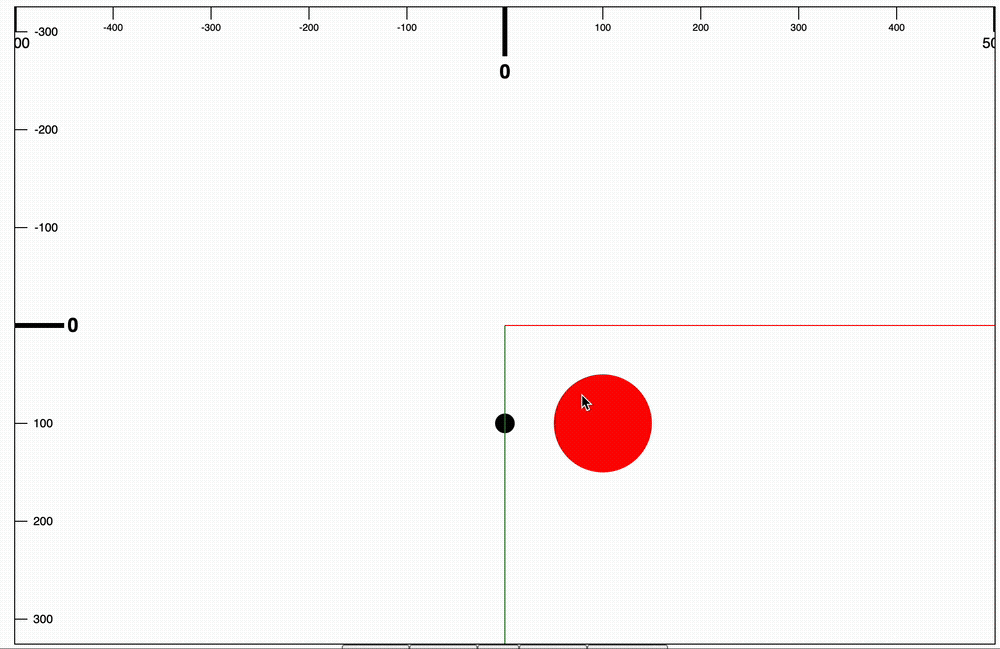
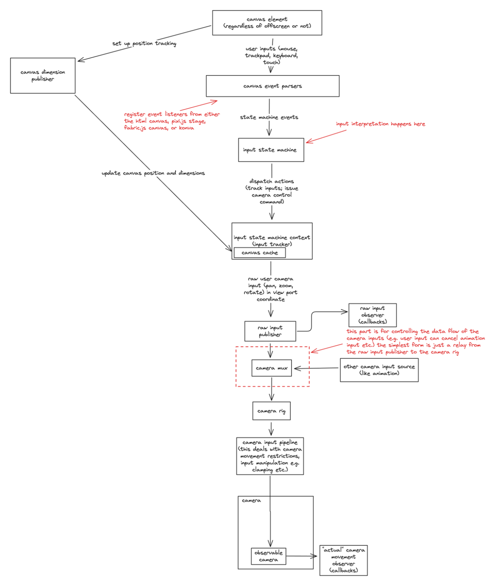

ue-too
uē-tôo
pan, zoom, rotate, and more with your html canvas.

Quick Demo • Install • Key Features • Quick Start • Development • Basic API Overview

A demonstration of uē-tôo's core functionality.
Note: This library is under active development. Some APIs may change in future releases.
Overview
What This Library Provides
- Transforms HTML canvas into a near-infinite canvas with panning, zooming, and rotation capabilities
- Provides utility functions that simplify the complex mathematics required for infinite canvas operations
- Compatible with multiple canvas frameworks (vanilla, Pixi.js, Fabric.js, Konva) as the underlying mathematical principles remain consistent
- Serves as a foundation library for building your own infinite canvas applications
- Accomplishes the same goal as pixi-viewport but without pixi.js dependency
What This Library Is Not
- A complete drawing application like Excalidraw or tldraw
- A full-featured package with built-in drawing tools and user interfaces
Motivation
Consider this scenario:
You're building a web application that allows users to draw on a canvas. You have your pen and eraser tools ready. During testing, you notice that users need to zoom in to work on fine details. After implementing zoom functionality, you realize users can't see other parts of the drawing when zoomed in, necessitating a pan feature.
As you add these features, the code becomes increasingly complex, especially when handling different input methods (mouse, touch, trackpad). This is where ue-too comes in - it handles all the panning and zooming logic, allowing you to focus on your application's core functionality.
Even if you're not building a drawing app, ue-too is useful for any canvas that requires panning functionality. It works with various frameworks including pixi.js, fabric.js, Konva, vanilla JavaScript canvas API, and even headless canvas in Node.js.
Quick Demo
Stackblitz example link: This example demonstrates the basic functionality shown in the Quick Start section.
Additional examples in the devserver directory show integration with pixi.js, fabric.js, and Konva (incomplete but providing general implementation guidance).
Documentation
- API Documentation
- 中文文件連結 (還在努力補沒翻完的，還要開發新功能，時間真的不太夠 u.u)
Installation and Usage
Package Manager
npm install ue-too
import { Board } from "ue-too";
Download from GitHub
Download the bundled JavaScript (ue-too.js) from the releases page and import it in your project:
import { Board } from "./ue-too.js";
Import from jsdelivr
import { Board } from "https://cdn.jsdelivr.net/npm/ue-too@latest/index.mjs";
Note: IIFE format is no longer supported.
Key Features
- Modularity: Use only the components you need (details in the Under the Hood section)
- Comprehensive input support: touch, trackpad (macOS), keyboard, and mouse, with customizable behavior
- Framework-agnostic: Works with HTML and JavaScript, and can be integrated with frontend frameworks/libraries
- Multi-framework compatibility: Works with pixi.js, fabric.js, Konva, and vanilla HTML canvas
Quick Start (HTML Canvas)
This example is based on the MDN documentation for the Canvas API.
You can follow along using CodeSandbox, Stackblitz, or any other online IDE.
Following the MDN example, you'll have a green rectangle in the canvas with this HTML and JavaScript:
HTML:
<canvas id="canvas"></canvas>
JavaScript:
const canvas = document.getElementById("canvas");
const ctx = canvas.getContext("2d");
ctx.fillStyle = "green";
ctx.fillRect(10, 10, 150, 100);
To add ue-too functionality:
- Import
ue-tooand create a newBoardinstance:
import { Board } from "ue-too";
const canvas = document.getElementById("canvas");
// remove the ctx constant
// instantiate the board by passing in the canvas element
const board = new Board(canvas);
// comment these out for now
// ctx.fillStyle = "green";
// ctx.fillRect(10, 10, 150, 100);
- Set up the animation loop:
function draw(timestamp) {
// step the board
board.step(timestamp);
// request the next frame
requestAnimationFrame(draw);
}
// start the animation loop
requestAnimationFrame(draw);
- Add the rectangle to the canvas:
function draw(timestamp) {
// step the board
board.step(timestamp);
// add the rectangle back to the canvas, the drawing steps is the same as the MDN example but we're using the context from the board instance.
board.context.fillStyle = "green";
board.context.fillRect(10, 10, 150, 100);
// request the next frame
requestAnimationFrame(draw);
}
// call the draw function every frame
requestAnimationFrame(draw);
Default Input Controls
Pan:
- Mouse + Keyboard: Drag while holding spacebar or use scroll wheel button
- Trackpad: Two-finger swipe
- Touch: Two-finger swipe
Zoom:
- Mouse + Keyboard: Ctrl + scroll wheel
- Trackpad: Two-finger pinch
- Touch: Two-finger pinch
Important Notes
- All drawing operations should be performed in the
requestAnimationFramecallback after thestepfunction - The
Boardclass is designed for minimal setup but offers less flexibility - For more customization, refer to the Under the Hood section
The Board class handles:
- Input event interpretation
- Automatic camera zoom boundary adjustments
- And more...
All components and utility functions are accessible, allowing you to create your own board implementation without using the requestAnimationFrame callback method.
For detailed camera control information, refer to the Board Camera section.
Development
This section is for working directly with the library's source code. If you're using the library and need to customize component behavior, skip to the Under the Hood section.
- Clone the repository
- Install dependencies:
pnpm i
I am using pnpm as the package manager for this project.
Node version 20.11.0 is used for development. (Some of the scripts that I wrote for ci/cd uses node version 20 APIs and is not compatible with 22 (specifically the assert) I will migrate them to use node version 22 APIs when I have time.)
The dev environment setup for this project is relatively simple. Let me break down the different aspects.
- Bundling (rollup):
pnpm buildBundling is done through rollup. There's arollup.config.jsin charge of that. Every subdirectory in thesrcdirectory gets its own bundled index.js file. - Unit Testing (jest):
pnpm testThere's not a lot of tests right now. Only the core functionalities revolving around the camera are unit tested. The next section I will move on to test is the input state machine. - Dev Server (vite):
pnpm devThedevserverdirectory contains the current examples of the board. It's sort of like a playground. The more complete example is the in themain.tsfile. - Docs Dev Server (vite):
pnpm dev:docswould spin up a docs server serving files from the directorydocs-staging - Documentation (typedoc):
pnpm doc:defaultwould generate adocs-staging/enand thenpnpm doc:move2prodwould copy the entiredocs-stagingtodocs - Translation: Pending This is a work in progress probably not going to be ready for the version 0.2 release. The flow of how things should be done is still in discussion.
The API documentation has all the APIs listed.
Under the Hood
ue-too consists of 3 core components:
Board Camera (viewport): This is the core of the cores xD; It's the class that holds the information about the viewport.Camera Input Multiplexer: This is the part that determines which kind of input should be passed through based on the current condition. This is to support multiple input methods. For example, user input would take precedence over the transition animation input and so on.User Input Interpretation: This is the part that handles the user input events from the canvas element (pointer, keyboard, touch, etc.), and based on the events determine what the user intentions are.
To see detail of each component navigate to the respective readme in the subdirectories.
It's recommended to start with the Board Camera since the other parts are built on top of it.
Below is a diagram showing from the user input to how the camera is updated and everything in the middle.

TODO
- [x] Add a canvas position dimension publisher that can be used to get the position and dimension of the canvas.
- [ ] Add a
boardify-pixipackage that contains utility functions for the board to work with pixi.js. - [ ] Add a
boardify-fabricpackage that contains utility functions for the board to work with fabric.js. - [ ] Add a
boardify-konvapackage that contains utility functions for the board to work with konva.js. - [ ] Add an example of the board being used with react.
- [ ] Add an example of the board being used with svelte. (I'm learning svelte right now so I can make a example for that)
- [ ] Add an example of the board being used with vue. (Currently I don't have any plans on learning vue so probably not going to make one very soon)
- [ ] A documentation site. There is a lot of util stuff that I don't think will fit in here in the readme. So stay tuned! (I am experimenting with docusaurus right now so it might be a docusaurus site)